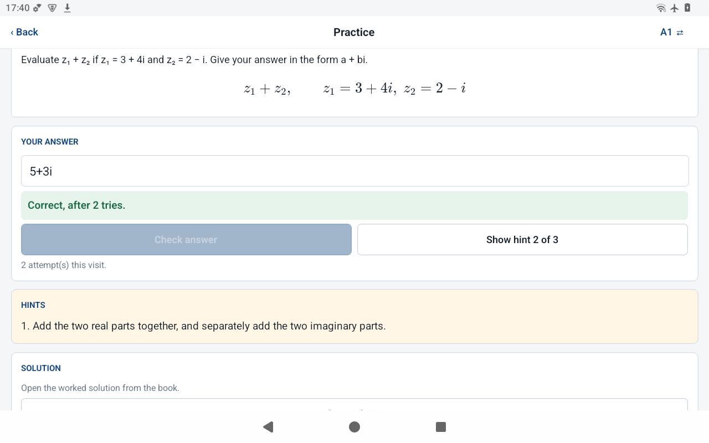
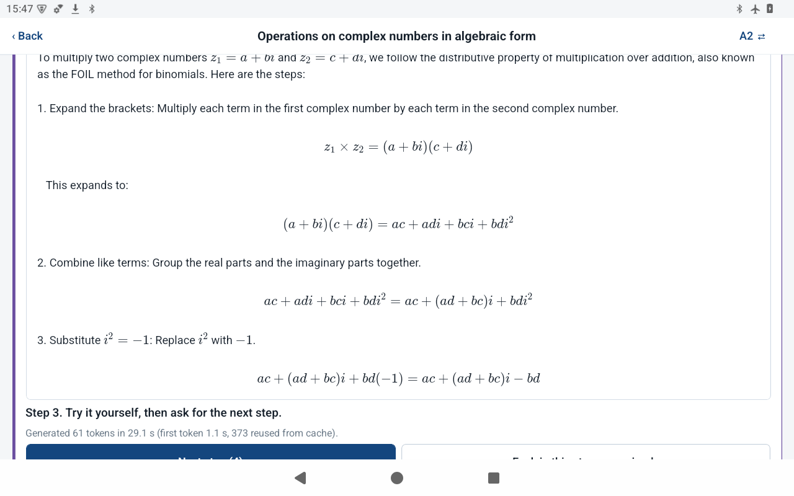
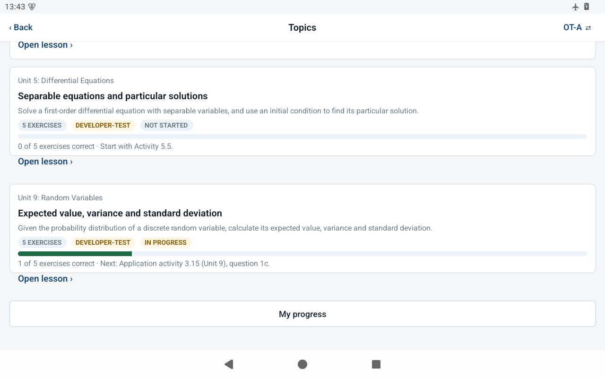
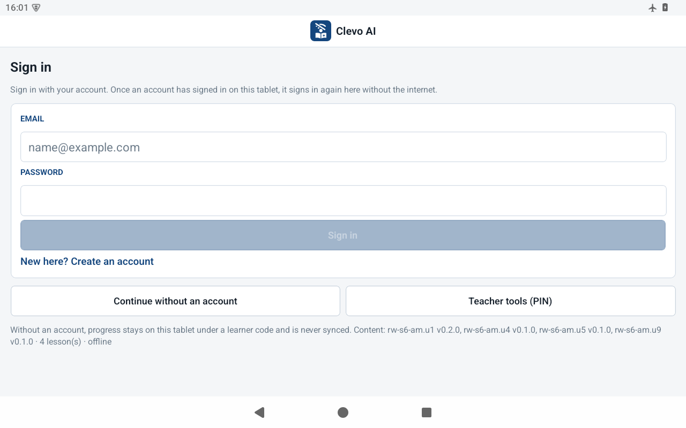
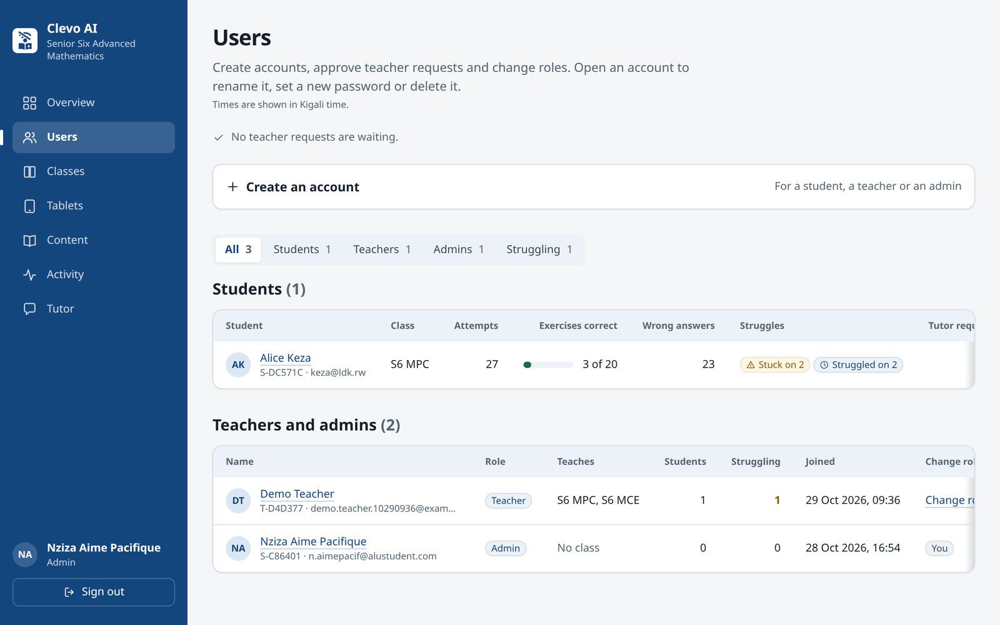
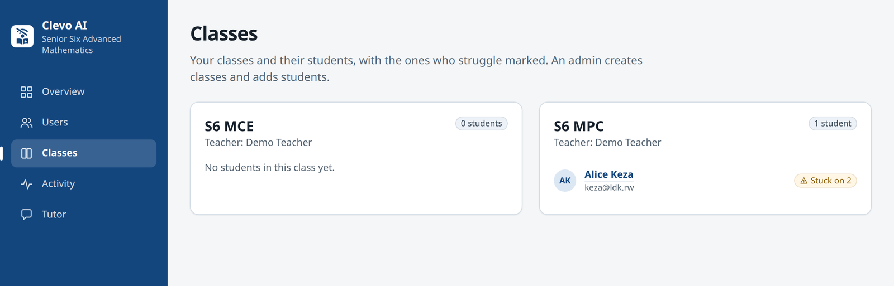

The product, Clevo AI, is an Android tutor for Senior Six Advanced Mathematics in the Rwanda Education Board (REB) curriculum that works with no internet connection. A learner reads lessons taken from the REB Student's Book with typeset formulas, practises exercises that the tablet marks, opens the book's hints in order before the worked solution, and asks a language model that runs on the tablet (Qwen2.5-Math-1.5B-Instruct, 4-bit, through llama.rn) for help one step at a time. Progress is computed from saved attempts and recommends the next exercise. Behind a PIN, teachers install the model, follow class progress and export research records. Release 1.3.0 added personal accounts that sign in offline after their first online sign-in, opt-in synchronisation to Supabase, and a web portal for teachers and admins; in 1.4.0 an admin publishes new or corrected lessons from the portal, and connected tablets offer to install them.
| Planned feature (proposal section) | Intended purpose | Status | Evidence |
|---|---|---|---|
| Comparison of four quantised models on the tablet (Objective 2, §3.4.2) | Choose a model on correctness, speed and memory | Completed | Correct on 24 maths probes: Qwen2.5-Math-1.5B 23, Qwen2.5-1.5B 14, Qwen3-1.7B 8, Llama-3.2-1B 4; Qwen3 peaked at 1,467 MB. docs/FEASIBILITY_FINDINGS.md, bench/ |
| Installable Android prototype (Objective 3) | Study with no internet | Completed | Signed APK 1.5.0, checksummed; docs/INSTALLATION_GUIDE.md; -PofflineOnly gives the study build |
| Lessons from the REB books, readable notation (§3.3) | Curriculum content offline | Completed | 4 lessons and 7 worked examples rendered with KaTeX from local assets; app/src/katex/; Fig. 2 |
| Practice package of 80 exercises and 240 hints (§1.5) | Bounded practice per unit | Partial: 20 and 60 | Five exercises with three hints per unit, from the book with page numbers; every key proven with SymPy. curriculum/rw_s6_mathematics/packages/ |
| Answer checking against reviewed keys (§3.4) | Immediate, reliable feedback | Completed | On-device evaluator for a + bi, π, e, √, ln and functions of x; 111 tests. app/src/checker/ |
| Progressive hints before the worked solution (§2.3.1) | Scaffold; discourage answer-seeking | Completed | Hints one at a time in the book's order; the solution opens after all hints or a correct answer, and checking then stops. app/src/study/practice.ts |
| Local model with one retrieved passage, streamed and cancellable, 120 s timeout (§3.4, §3.5.4) | Flexible follow-up help without blocking study | Completed | app/src/guidance/; offline test: median 76.7 s, first token 23.2 s; cancel stopped in 12.1 s |
| Generated text names its source and is labelled as not reviewed (§3.3) | Let learners check the model | Completed | Book pages under every answer since 1.2.1; docs/images/p7-tablet-tutor-source.png |
| Out-of-scope questions declined (§3.3) | No unsupported answers | Completed | Topic router declines before the model is called; app/src/content/router.ts |
| Next-exercise recommendation from recent attempts (§2.3.4) | Simple, explainable personalisation | Completed | app/src/learner/progress.ts; offline test task T5 30/30 |
| Saved progress under learner codes; interaction log (§3.5.3) | Resume work; research measures | Completed | SQLite tables incl. guidance_events (the proposal's InteractionEvent); T6 30/30 |
| Offline reliability ≥ 171 of 180 attempts (Objective 3, §3.7.1) | Show the tutor works offline | Completed: 178 | docs/evidence/offline-test-2026-10-28/ |
| Peak application memory below 2 GB (Table 8) | Fit a 3.79 GB tablet | Completed | About 1.2 GB with the model loaded (docs/RELEASE_V1.md) |
| Research export of approved fields (§3.8) | Manual transfer of study data | Completed | CSV and manifest from Teacher tools; app/src/export/ |
| Teacher-checked evaluation set of 100 held-out questions (Objective 1, §3.2.2) | Unbiased measure of correctness | Partial | Objectives, device limits and 28 development probes done; held-out set not yet written; teacher review pending |
| Retrieval comparison A/B/C with McNemar test (Objective 4) | Test hypothesis H1 | Not done | Needs the held-out set and two teacher raters |
| Student pilot: SUS and pre/post tests (Objective 5) | Usability, learning indications | Not started | Waits for ALU ethics approval and school permission; instruments prepared |
| Added: class progress and Bluetooth progress files (1.1, 1.2) | A teacher sees a class spread over tablets, offline | Added | app/src/sharing/; tablet to Infinix Smart 8 phone transfer, 20 Oct |
| Added: accounts, opt-in sync, admin portal (1.3) | Monitoring across tablets and over time | Added | app/src/account/, app/src/sync/, supabase/, admin/; docs/ACCOUNTS_AND_SYNC.md |
Justified changes.
Content and checking. Each unit is a versioned JSON package. tools/validate_package.py checks its structure and proves every answer key with SymPy; the app bundles the packages and imports them into SQLite on first launch. Because SymPy cannot run on the tablet, app/src/checker/ re-implements the needed part: a tokenizer and recursive-descent parser over complex numbers with π, e, √, ln and exp. A typed answer is evaluated and compared with the key within a tolerance; a function of x, such as a particular solution of a differential equation, is compared at sample points of its domain. Input outside the grammar is reported as "could not be checked automatically", never guessed.
The tutor pipeline. A question passes through four stages. (1) The router matches it against each lesson's topic keywords as whole words; no match means the question is declined and the model is never loaded. (2) On an exercise, the controller serves the next stored hint while any remain. (3) The prompt has a fixed system message, so llama.cpp reuses its cached prefix, plus one passage: the lesson paragraph that best overlaps the question, or the exercise and its hints. (4) GuidanceService loads the model lazily, runs one request at a time, stops it at 120 s or on Cancel, and pre-processes likely prompts while the learner reads. Output is paced one step at a time: each generation stops at the next step's heading or after 80 tokens, and a long step continues in further chunks. A numeric or complex final answer in the text is masked. The outcome and its timings go to guidance_events.
Accounts, sync and the portal. The first sign-in is checked online by Supabase Auth. The tablet then keeps the profile, a salted PBKDF2-SHA256 hash of the password (3,000 rounds, sized for Hermes, which has no JIT) and the refresh token, so the account signs in again offline. When sync is switched on, app/src/sync/engine.ts runs at start-up, every two minutes and on demand. It upserts the account's rows keyed by tablet and local id, so a repeat changes nothing, in batches of 200. A per-account, per-table high-water mark means each run sends only new rows; a failure leaves the mark, and the next run resends. Row-level security in supabase/migrations/ lets an account write and read only its own rows; an admin reads everything and a teacher only the students in their own classes; roles change only through set_role, which only an admin may call. The Next.js portal renders on the server and queries as the signed-in user with the publishable key only; proxy.ts sends signed-out visitors to the sign-in page. Teachers see every wrong answer: who struggled (two or more wrong answers on an exercise, solved later or not) and who is stuck (not yet solved, the app's own rule), on the overview, as a filter on Users and on each student's page, with the last wrong answer typed; admins create, rename, reset and delete accounts and manage classes, and the database checks every one of those actions again.






| Strategy | Why and how | Result | Improvement made afterwards |
|---|---|---|---|
| Unit and integration tests (Jest) | Logic is kept out of screens so it can be tested without a tablet. Real SQLite (sql.js), fake model engines and a fake server; screens rendered and driven by test id. | 306 tests in 15 suites pass; TypeScript and ESLint report 0 problems. Checker 111, guidance 49, content 38, lesson updates 21, sync and accounts 16, sharing 14, learner 14, progress 13, class 7, study flow 5. | Under CPU load the tests failed 4 runs out of 4 (5 to 8 tests each): fixed sleeps and Jest's 5 s limit. Tests now wait for conditions and have 30 s; 4 of 4 loaded runs pass. An App test that kept a timer alive was fixed. |
| Device test: offline reliability (§3.7.1) | Only the real tablet shows offline behaviour, timing and heat. Six tasks × ten cases × three network conditions, driven by app/scripts/offline_test.py through the UI. | 178 of 180 passed (98.9%; target 95%). No crash, lost record or network use, including 60 attempts with Wi-Fi cut mid-task. The two failures were tutor answers at 124.9 s and 120.6 s. | A first run on 1.2.1 found topic cards keeping a stale size after a restart, so taps opened the wrong lesson (Fig. 2c). 1.2.2 reads progress before drawing; a regression test fails on 1.2.1 and passes on 1.2.2. Next: cap the first step at two chunks. |
| Security tests of row-level security | The rules, not the app, protect the data. The migrations run on an in-process Postgres (PGlite); statements run as different accounts. | 74 of 74 checks pass: a student cannot write as another, read others' rows, or promote itself; a teacher reads only their classes' students and cannot change roles; only an admin renames, resets or deletes accounts, or publishes lessons, and only a valid, newer package; anonymous users read only published lessons; two accounts can sync from one tablet. | The script printed results but always exited 0; each check now states its expected result. The tablet's log then showed a second account on a shared tablet refused at every sync: migration 0003 fixes the tablet read rule, and a new check fails without it. |
| Live integration and end-to-end sync | Checks the app's own code against the real project and the real network. | A new student synced a session and read back exactly its rows; a teacher request stayed a student (28 Oct). On the tablet, work done in airplane mode reached the server once Wi-Fi returned, exactly once. | Found that a sync can fail for about a minute after the network returns; the two-minute retry covers it, so it is documented as a known limit. |
| Content and grader validation | Wrong keys would mark learners wrongly. | 4 packages valid, 20 keys proven; the grader passes 24 probes and 17 regression cases. | An audit found two grader defects that inflated scores; fixing them changed Llama-3.2-1B from 6 to 4. |
Different inputs and error handling. The same component was given valid, invalid and edge inputs:
| Input | System response (tests or tablet) |
|---|---|
| Answer "3i+5", "5 − 3i", "sin(2)" or nothing, for the key 5 + 3i | "Correct, after 3 tries"; "Not quite"; "could not be checked automatically"; "Type an answer first." (not counted as an attempt) |
| Question outside the four units; tutor asked with no model installed | Declined at once, model not called; plain message in 50 ms, stored hints and solutions still work |
| Tutor answer longer than 120 s; Cancel pressed | Stopped, partial text kept and logged as timed-out; stopped after 12.1 s and logged as cancelled |
| Account never used on this tablet, signing in offline; wrong password | "has not signed in on this tablet before"; "Wrong email or password" |
| Network lost during sync; a student writing a row as another account | "No internet connection", marks unchanged, rows sent on the next run; refused by row-level security |
| Measure (IT-801B, 1.2.2, offline test) | Median | 95th pct. | Limit |
|---|---|---|---|
| Stored hint shown | 0.12 s | 0.14 s | 2 s |
| Exercise checked, with feedback | 0.13 s | 0.16 s | 2 s |
| Topic opened | 1.44 s | 1.55 s | 2 s |
| Restart, progress reopened | 0.81 s | 0.96 s | 10 s |
| Tutor: first token | 23.2 s | 47.0 s | none |
| Tutor: complete first step | 76.7 s | 120.6 s | 120 s |
Other measures: cold launch shown in 768–788 ms; about 1.2 GB of memory with the model loaded; APK 101 MB plus the 986 MB model; CPU mean 61 °C and peak 82.3 °C over a 26-minute session; battery 73% to 46% over the 2.5-hour test on USB power.
| Configuration (llama-bench, 1.5B Q4_K_M) | Prompt tok/s | Output tok/s |
|---|---|---|
| CPU, 1 / 2 / 3 threads | 1.28 / 2.52 / 3.71 | 0.99 / 1.80 / 2.60 |
| CPU, 4 threads | 3.74 | 1.61 |
| Mali-G52 GPU (Vulkan), all layers | 0.64 | 0.81 |
| Q4_0 / IQ4_XS instead of Q4_K_M | 3.82 / 4.04 | 2.74 / 2.82 |
The tablet's CPU (4 × Cortex-A53) lacks the dot-product instructions that fast quantised kernels need. A build that uses them stops with an illegal instruction on this CPU, so llama.cpp is built for plain ARMv8-A, uses three threads (four starve the system) and no GPU (four to six times slower).
| Environment | Result |
|---|---|
| ATMPC IT-801B, Android 15 (API 35), 3.79 GB RAM: the low-end target | All features and every test above; 1.2.2 offline-only and 1.3.0 to 1.5.0 release builds; a lesson update offered and installed, and imported offline |
| Infinix Smart 8 phone, as a teacher's device | 1.2.0 installed; received a progress file over Bluetooth and showed the class; ran without the model |
| Android versions | Built for API 24 to 36 (Android 7 to 16); only Android 15 was tested on a device |
| Portal in Chrome 154 and Firefox 142, at 1280 px and 390 px wide (Linux) | Signed out, every page redirects to sign-in; the form fits without horizontal scrolling; no console errors after the site icon was served to signed-out visitors. WebKit could not start without two system libraries. |
| Portal behind a slow router DNS (lookups of 5 to 30 s) | The server now keeps connections to Supabase for 60 s, remembers its address and checks the session token locally: a page after 15 s idle answered in 0.36 to 0.50 s, against 5.5 to 5.9 s in four of six tries before; the overview's requests in 0.32 to 0.48 s instead of failing in two of three (docs/evidence/portal-speed/) |
| Development: Linux, Node 20.20 (the app asks for 22) | All tests, typecheck and builds pass; the version gap is a known, documented mismatch |
Structure. Each feature owns a directory (docs/feature-map.md): screens hold layout and event wiring, and the logic sits in pure modules tested without React, a WebView or a tablet. The app's 8,469 lines of TypeScript are in 63 files; the largest, App.tsx, which wires the screens and schedules together, is 511 lines. TypeScript runs in strict mode, ESLint reports no warnings, and the history holds more than 150 focused commits made between 1 September and 29 October 2026.
| Problem | Algorithm or technique | Where |
|---|---|---|
| Mark answers without SymPy | Tokenizer and recursive-descent parser over complex numbers; comparison within a tolerance; functions compared at sample points, skipping domain errors | app/src/checker/ |
| Keep the model in scope | Normalised whole-word keyword matching per lesson, best score wins, else decline | content/router.ts |
| Ground answers in one passage | A paragraph tagged with the matched topic, else the best overlap of word stems, rarer words weighted more (1/df²) and topic words doubled; with its formula, cut to 320 characters | guidance/prompt.ts |
| Wait less for the model | Byte-stable system prompt for llama.cpp's prefix cache; prompts processed while the learner reads, only the newest pending one kept, none once a request starts | guidance/service.ts |
| Hint first, never the answer | Candidate numbers found by pattern, evaluated, and masked when equal to the key; step pacing as a small state machine with chunking | guidance/redact.ts, steps.ts |
| Explainable progress | Mastery = share of exercises correct; next exercise is the first not yet correct, or the worked example after two wrong answers | learner/progress.ts |
| One class across tablets, offline | Validated summary files; newest file per tablet kept (importing twice changes nothing); learners merged by code | app/src/sharing/ |
| Sync that survives bad networks | Idempotent upserts keyed by tablet and local id; per-table high-water marks; batches of 200 | sync/engine.ts |
| Offline sign-in | Salted PBKDF2-SHA256; comparison of the stored hash | account/password.ts |
Known limits. The tutor is slow on this hardware, and 2 of 30 first steps missed 120 s. The content is a starter set awaiting teacher review. Records on the tablet are not encrypted; the teacher PIN is shared. A student in no class is visible only to admins. The portal knows a tablet's lesson versions only from its last sync; a tablet with no internet imports a published release from a file, and a new version of the app itself is still installed by hand.